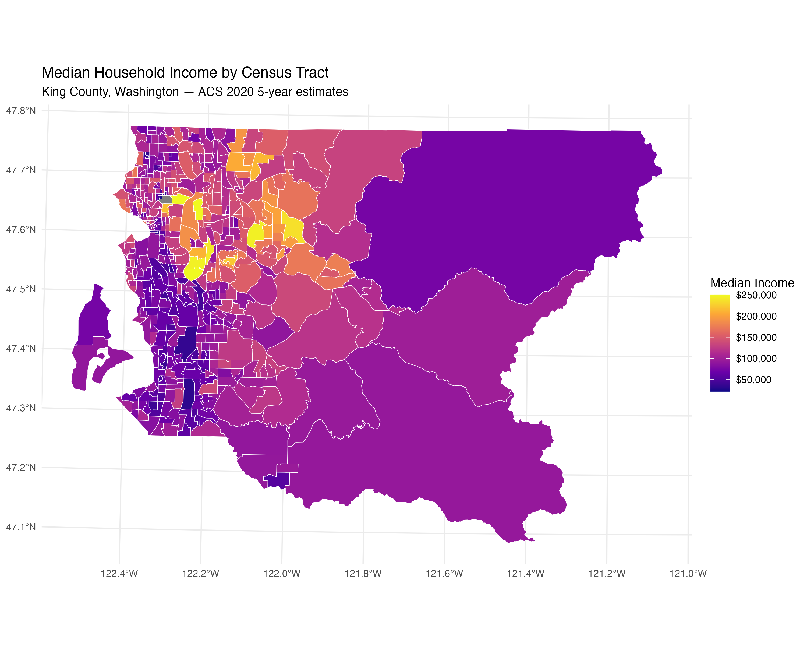
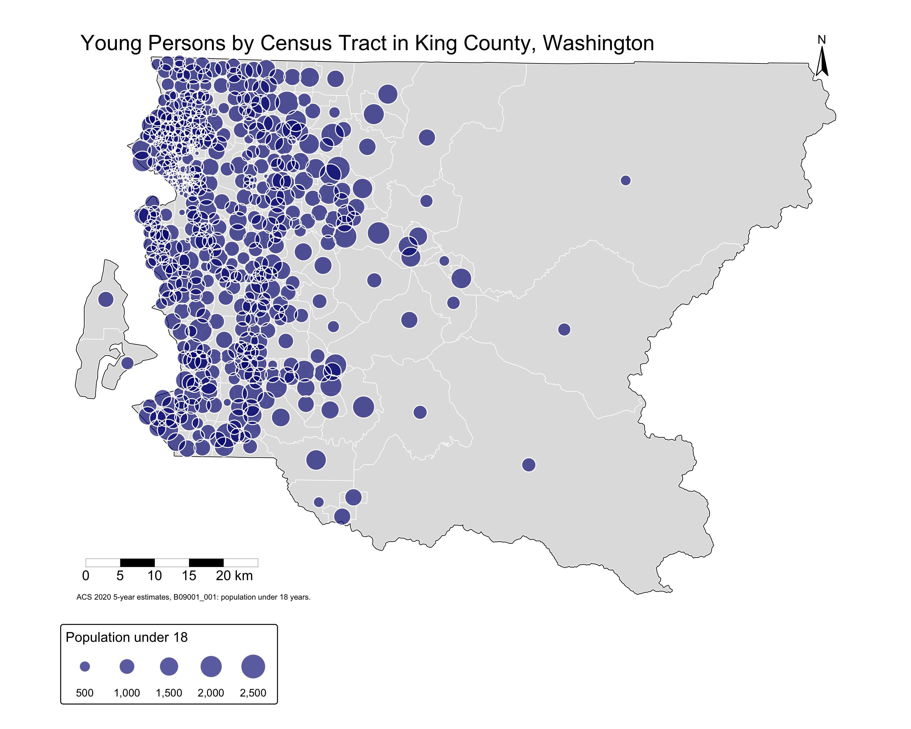

Lab 3: Census Mapping and Visualization
Geography of Interest
For this lab, I chose to center my maps around King County, Washington,
which includes Seattle and many of the surrounding suburban communities.
This geography is appropriate because it has a large and diverse population,
making it useful for mapping race/ethnicity, young people and their
population, and different income patterns. King County is also not too small,
so the maps show meaningful variation across space, but it is not so large
that the urban population becomes visually lost. I used census tracts as
the main subunit because they are small enough to show neighborhood level
patterns while still being commonly used for ACS demographic and income data.
Figure 1: Race/Ethnicity Dot Density Map

This map recreates a race/ethnicity dot density map for King County,
Washington using 2020 ACS 5 year estimates. The map shows the distribution
of selected racial and ethnic groups across census tracts. Each dot
represents a set number of people, allowing the viewer to see both overall
population concentration and differences in where groups are located. This
map uses a different location, projection, color style, and dataset from
Walker’s original example.
Figure 2: Total Population Map

For the total population choropleth map, I used total population data from
the 2020 Decennial Census. I chose this dataset because it provides a
general overview of where people are concentrated across King County,
Washington. Census tracts were used as the geographic unit because they
allow population patterns to be visualized at a neighborhood scale while
still maintaining consistent census boundaries throughout the county.
A choropleth map was appropriate for this variable because total population
is a continuous quantitative value that varies across space. I used a
sequential color scheme to represent population density, where lighter
colors indicate lower population totals and darker colors represent higher
population totals. This makes it easier to quickly identify more densely
populated areas within the county. The map shows that the highest population
concentrations are primarily located in and around Seattle and other
urbanized western portions of King County, while eastern areas tend to have
lower population totals due to more rural land use and lower housing density.
Figure 3: Income Choropleth Map

For the income choropleth map, I used median household income from the 2020
ACS 5 year estimates, table B19013. I chose this income dataset because
median household income is a common and understandable measure of economic
conditions. I chose King County because it contains Seattle as well as
suburban and less dense areas, which creates visible income variation across
space. Census tracts were used as the subunit because they allow
neighborhood level patterns to be shown more clearly than counties or larger
geographies. I chose median household income because it directly represents
economic inequality and helps compare different parts of the county. A sequential
color scheme is appropriate because income is ordered from low to high.
Lighter colors represent lower values and darker or more intense colors
represent higher values, helping the reader understand the pattern quickly.
I placed the legend on the side of the map so it is easy to read without
covering important map areas.
Figure 4: Graduated Symbol Map of Young Persons

For the graduated symbol map, I used the ACS variable representing the
population under 18 years old from the 2020 ACS 5 year estimates, table
B09001. I chose this dataset because it highlights where children and
teenagers are concentrated across King County and helps show differences
between urban, suburban, and less populated areas. Census tracts were used
as the geographic unit because they provide enough detail to reveal
neighborhood-level population patterns while still being large enough to map
demographic data clearly. Graduated symbols were used because they are effective
for representing differences in quantity across space. Larger circles indicate
census tracts with higher numbers of young persons, while smaller circles represent
areas with lower youth populations. I chose a blue color scheme with
partly transparent symbols so overlapping areas remain visible without
obscuring the tract boundaries beneath them. Additional map elements,
including a scale bar and north arrow, help provide geographic context for
the reader. The map shows that larger populations of young persons are
generally concentrated in the western and more urbanized portions of King
County, while the eastern portion of the county contains fewer and smaller
symbols due to lower population density.